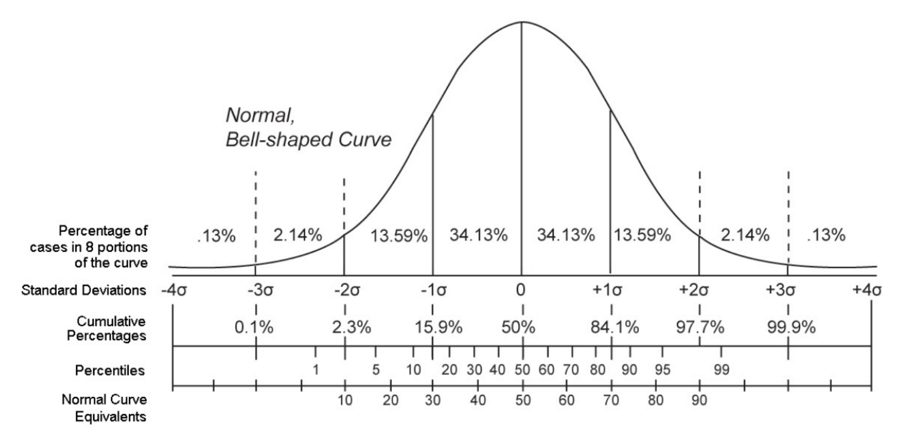

Hafta 1 – Introduction to Occupational Health and Safety: Basic Concepts
Temel kavramlar: hazard (tehlike), risk, risk assessment, incident, accident ve near miss arasındaki fark. Vize ve finalde en çok bu tanımlar ve "hangisi hangisi" tipi eşleştirmeler çıkıyor.
Ders bilgisi
- Not: Midterm %40, Final %60; sınav multiple-choice.
- Amaç: İSG bilgisini yasal düzenlemelere uygun öğrenmek ve mühendislik bilgisini İSG'ye uygulayabilmek.
- Ders hedefleri: genel İSG bilgisi, risklerin bilinmesi, Türkiye'deki kanun ve yönetmelikler, yangın ve benzeri acil durumlarla mücadele, çevresel risk faktörlerinin tanınması.
- Haftalık plan: 1 Basic concepts; 2 Injury and illness statistics, record keeping and reporting; 3 Law No. 6331; 4 Ergonomics; 5 Anthropometry and anthropometric design; 6 Manual material handling, biomechanics; 7 Work accidents and case examples; 8 Midterm; 9 Safety signs and signals (signboards, acoustic, hand, verbal); 10 Emergencies at workplaces; 11 Fire safety; 12 Safety factor, fail-safe designs, unsafe acts and conditions, accident causation; 13 Hazard control; 14 Review.
Hazard (tehlike) tanımı
- Hazard (genel tanım): herhangi bir potansiyel zarar kaynağı; bir şeye (ekipman, mal, çevre) veya birine (can, sağlık) belirli koşullarda, işte, zarar veya sağlık üzerinde olumsuz etki verme potansiyeli.
- 6331 sayılı Kanun, madde 3 tanımı: İşyerinde bulunan ya da dışarıdan gelebilecek, çalışanı veya işyerini etkileyebilecek zarar veya hasar verme potansiyeli.
Hazard örnekleri ve etkileri
| Workplace hazard (tür) | Hazard örneği | Verdiği zarar |
|---|---|---|
| Thing / Object | Knife (bıçak) | Cut (kesik) |
| Substance | Benzene | Leukemia (lösemi) |
| Material | Asbestos (asbest) | Mesothelioma |
| Source of energy | Electricity | Shock, electrocution |
| Condition | Wet floor | Slips, falls |
| Process | Welding (kaynak) | Metal fume fever |
| Practice | Hard rock mining | Silicosis |
Describing hazards: Source, Mechanism, Outcome
Bir hazard üç parçada anlatılır: Source (kaynak), Mechanism (zararın nasıl oluştuğu), Outcome (sonuç). Slayt örneği: "Laceration (outcome) from unprotected skin exposure (mechanism) to a sharp-edged instrument (source)."
| Source | Mechanism | Outcome |
|---|---|---|
| Unguarded, energized equipment | Pinching, crushing, electrocution | Death, equipment loss |
| Gasoline vapours near ignition sources | Explosion | Hearing loss, burns, death, equipment loss |
| Steam boiler operating with no relief valve | Overpressure explosion | Loss of nearby equipment and personnel |
| Oxygen deficient atmosphere (O2 below 19.5% by volume) | Asphyxia | Death |
| Unprotected excavation | Wall collapse and/or falling into | Death, equipment loss, re-excavate |
Mini note: asphyxia / hypoxia (oksijen azlığı)
| O2 oranı (%) | Belirti |
|---|---|
| 21 | Normal koşul, etki yok |
| 19.5 | OSHA'ya göre oxygen-deficient atmosphere sınırı |
| 17 | Kas fonksiyonlarında bozulma, hızlı nefes (muscular impairment, rapid breaths) |
| 12 | Baş dönmesi, baş ağrısı, hızlı yorgunluk |
| 9 | Bilinç kaybı (unconsciousness) |
| 7–6 | Birkaç dakika içinde ölüm |
Classification of hazards (tehlike türleri)
| Tür | İçerik / örnek |
|---|---|
| Physical hazards | Noise, vibration, radiation, heat/cold stress, magnetic fields, light, UV, high pressure (ve vacuum). Sınavda aletlerin merdiven üstünde bırakılması da fiziksel tehlike sayılmış. |
| Chemical hazards | Kimyasalların physical, chemical ve toxic özellikleri (toksik özellik = chemical hazard) |
| Biological hazards | Viruses, parasites, bacteria, food, fungi, toxins, insects, plants, birds, animals, humans (sınavda mould = küf) |
| Psychological (organisational), psychosocial hazards | Fatigue, stress, work pressure, violence, mobbing, conflict or bullying, illness, lack of training |
| Ergonomic hazards | Repetitive movements, awkward posture, prolonged duration |
Spotting the hazards (uygulama slaytları)
- Slaytlarda resimli "hazard avı" egzersizleri var: mutfak (ıslak zemin, fritöz), duş kabininde prizler (elektrik), depo sahnesi, 22 tehlikeli fabrika resmi, ofis resmi.
- Depo sahnesinde numaralı örnekler: 1 rubbish on ground (yerde çöp); 2 unsecured chemicals; 3 machine guarding lifted (makine koruyucusu kaldırılmış); 4 water on floor (slips/trips); 5 stacked material unevenly; 7 pallets blocking fire exit; 8 forklift stacked too high and driver can't see.
- 22 hazards resmi (süre 10 dk, "tehlikeleri bul, riskleri tanımla"): örnekler: hammer fırlatmak, merdivende sigara içmek, yüklü kutular yüzünden görüş kaybıyla forklift kullanmak, yerde kırık cam, merdivenin bir tarafının desteklenmesi, dengesiz iki kutunun üstünde durmak, çok uzun tahta taşımak, bağlanmamış büyük borular, yerde çivili tahtalar, korumasız alev, dengesiz yığından kutu almak, açık rögara yürümek, yerde su birikintisi, çantadan sarkan aletler, koruyucu gözlüksüz üfleç (blowtorch) kullanmak.
- Top 5 potential safety hazards: Office: 1 poor ergonomics (uzun süre oturma), 2 eye strain (uzun süre bilgisayar), 3 risk of burns (dökülen sıcak kahve), 4 risk of falling (buzlu zemin/merdiven), 5 risk of fire (başında kimse olmayan elektrikli ısıtıcı). Field: 1 tripping hazards (kötü temizlik), 2 injuries due to poor/insufficient lighting, 3 risk of slipping (buz, ıslak zemin), 4 risk of injury (kötü merdiven, yanlış merdiven kullanımı), 5 poor air quality and ventilation.
- Office Dangers uygulaması (15 dk): hazard bul → risk tanımla → kontrol öner. Slayt cevapları: dağınık kablolar (priz yap, kablo yayılmasın); açık dolap (kapat); masadaki fincan (çalışma alanından uzak tut); kâğıt kesici (kullanımdan sonra sabitle); dar çalışma alanı (düzenle).
Workplace hazard classes (işyeri tehlike sınıfları)
- Sınıflandırma; yapılan işin niteliğine, işin her aşamasında kullanılan veya üretilen maddelere, iş ekipmanına ve üretim yöntemlerine göre yapılır ve 6331 sayılı Kanun kapsamında listelenir (EK-1 "İşyeri Tehlike Sınıfları Listesi", NACE Rev.2 altılı koda göre; sütunlar: kod, tanım, tehlike sınıfı).
- Üç sınıf: Less Hazardous (az tehlikeli; örnek office work), Hazardous (tehlikeli; örnek farming), Very Hazardous (çok tehlikeli; örnek mining).
Risk
- Risk: bir kişinin bir hazard'a maruz kalması halinde zarar görme veya sağlığı olumsuz etkilenme şansı/olasılığı (chance or probability). Mal veya ekipman kaybı durumlarına da uygulanabilir.
- Slayt örneği: Sigaradan kanser riski şöyle ifade edilebilir: sigara içenlerin akciğer kanserinden ölme olasılığı içmeyenlere göre 12 kat fazladır; ya da (örnek olarak) 100.000 sigara içenden 55'inin akciğer kanserine yakalanması muhtemeldir. Sigara en az 14 kanser türüne neden olabilir (en büyük pay akciğer).
Factors that influence the degree of risk
| Faktör | Anlamı |
|---|---|
| Duration (süre) | Kişinin tehlikeli şeye/duruma ne kadar süre maruz kaldığı |
| Type of exposure (maruziyet şekli) | Kişinin tehlikeye nasıl maruz kaldığı (ör. buhar solumak, ciltle temas) |
| Severity (şiddet) | Maruziyet koşulları altında etkilerin ne kadar ağır olduğu |
Risk assessment
- Risk assessment üç adımlı süreçtir: hazard'ları identify (tanımla); bu hazard'a bağlı riski analyse or evaluate (analiz/değerlendir); hazard'ı eliminate or control etmek için uygun yolları belirle.
Incident, accident, near miss
- Incident: işi tamamlamanızı engelleyen ve yaralanma, hastalık, ölüm, mal hasarı veya bunların bir bileşimine yol açabilen planlanmamış, istenmeyen olay; sonuçları küçükten feci boyuta kadar değişir. Büyük veya küçük, iyi veya kötü, kasıtlı veya kasıtsız her olaya denebilir (örnek: banka soygunu, ünlüler arası tartışma).
- Unplanned and undesired do not mean unable to prevent (planlanmamış ve istenmeyen, önlenemez demek değildir).
- Accident: hata veya şans sonucu oluşan kasıtsız (planlanmamış) ve istenmeyen olay veya olaylar dizisi; genellikle kişilerde hastalık, yaralanma, ölüm veya ekipman ve donanımda hasarla sonuçlanır. Doğrudan veya dolaylı olarak insan faaliyetinin sonucudur, doğal olay değildir. Örnekler: araba kazası, fabrikada arızalanan ekipmanın işçileri yaralaması; çok küçük kazalar: birinin ayağına basmak, kahveyi başkasının üstüne dökmek.
- Near miss (ramak kala): bu sefer yaralanma, hastalık veya hasarla sonuçlanmayan ama bunu yapma potansiyeli olan planlanmamış olay. Farklı koşullarda yaralanma, hastalık veya mal hasarına yol açabilecek incident'ların bir alt kümesidir ama olmamıştır. Ciddi kazaları önlemek için wake-up call (uyandırma çağrısı) olarak değerlendirilmelidir.
| Kavram | Yaralanma/hastalık/ölüm oldu mu? | Formül |
|---|---|---|
| Accident | Evet | Accident = injuries / illnesses / death (incident'ın özel bir türü) |
| Near miss | Hayır | Near-miss = yaralanma veya hastalığın olmadığı incident |
| Incident | Olabilir de olmayabilir de | Incident = accident / near-miss |
Slayt çizgi filmi (yük taşıyan askının çatlaması): Unsafe condition (çatlak) → Unsafe act (altında durup konuşmak) → Near miss (yük düşer, kimse yaralanmaz) → Accident (yük düşer, yaralanma olur).
Safety activities: reactive vs proactive
| Tür | Zamanı | Örnekler |
|---|---|---|
| Reactive safety activities | Kaza olduktan sonra | Accident report, illness report, near miss report (slayta göre listelenmiş; bu aktiviteler sonrası yapılır) |
| Proactive safety activities | Kaza olmadan önce | Training, control, performing risk analyses, measurements, meetings, record keeping, taking notes |
Slaytta proactive sütununun yanında örnek olarak bir Near-Miss Report Form (bölüm, bina, tarih, olay tipi: near-miss, safety concern, unsafe act, unsafe condition vb.; olası sonuç ve güvenlik önerisi) gösterilmiş.
Hızlı tekrar
- Hazard = zarar kaynağı/potansiyeli; Risk = zarar olasılığı; faktörler: duration, type of exposure, severity.
- Hazard türleri: physical, chemical, biological, psychological/psychosocial, ergonomic.
- Hazard classes: less hazardous, hazardous, very hazardous; sınıfı Ministry of Labour belirler; çalışan sayısı kriter değildir.
- Risk assessment: identify, analyse/evaluate, eliminate/control.
- Incident = accident / near miss; accident = yaralanma/hastalık/ölüm var; near miss = yok ama potansiyel var.
- Reactive: olay sonrası raporlar; proactive: olay öncesi risk analizi, eğitim, ölçüm.
Hafta 2 – Injury and Illness Statistics, Record Keeping and Reporting
İş kazası ve meslek hastalığı tanımları (5510 m.13, 14, 19), endüstriyel hijyen, Türkiye'deki OSH kurumları ve kanunları, SGK istatistikleri (2016 verisi) ile sıklık (incidence) ve ağırlık (weight) hızı hesapları. Sınavda en çok "bu bir iş kazası mı?" senaryosu, kurum eşleme ve istatistik sorusu çıkar.
İş kazası tanımı (Occupational accident)
- Occupational accident (iş kazası): işyerinde (at the workplace) veya işin yapılması nedeniyle (due to the performance of work) meydana gelen ve ölüme ya da bedensel/ruhsal bütünlük kaybına (physical or mental impairment to the physical integrity of the victim) yol açan her olay.
- Tanım "ve" değil "or" ile kurulur: iki koşuldan biri yeterlidir.
5510 sayılı Kanun m.13 – İş kazası (Work accident)
5510 Social Insurance and Universal Health Insurance Law (Sosyal Sigortalar ve Genel Sağlık Sigortası Kanunu). Madde 13 özeti: sigortalıda anında veya sonradan (immediate or delayed) bedensel ya da ruhsal engel doğuran ve aşağıdaki hallerden birinde meydana gelen olaydır:
| Bent | Durum |
|---|---|
| a | Sigortalı işyerinde bulunduğu sırada (at the workplace) |
| b | İşveren tarafından yürütülen iş nedeniyle (due to the work); kendi adına ve hesabına çalışan sigortalıda da kendi yaptığı iş nedeniyle |
| c | İşveren altında çalışan sigortalının asıl işini yapmadığı bir anda, görevli olarak başka bir yere gönderilmesi nedeniyle işyeri dışında (sent on duty to another place out of the workplace) |
| d | Emziren kadın sigortalının, iş mevzuatına göre çocuğunu emzirmesi için ayrılan zamanda (nursing her child) |
| e | Sigortalının işyerine gidiş-gelişi sırasında, işveren tarafından sağlanan taşıtla (on a vehicle provided by the employer) |
"Is this a work accident or not?" vakaları
Slaytlarda cevap yazmaz; aşağıdaki sonuçlar 5510 m.13 mantığıyla çıkarılmıştır (ders içi tartışma soruları).
| Vaka (slayt) | Sonuç | Gerekçe |
|---|---|---|
| Fırtına, inşaat şantiyesi yanındaki ve yemekhane olarak kullanılan çadırın çatısını çöktürdü; altındaki 4 işçi yaralandı | İş kazası | Şantiye/işyeri alanında (a); doğal olay sonucu olması iş kazası olmasını engellemez |
| Şirkete ait kamp evinde (bunkhouse) uyuyan işçi sobadan çıkan karbonmonoksit ile zehirlendi | İş kazası | İşveren tarafından sağlanan, işle bağlantılı konaklama alanı |
| Doktora, yardım etmeye çalıştığı hasta tarafından ısırıldı | İş kazası | İş nedeniyle (b) |
| Güvenlik görevlisi, güvenlik köpeğini yakalamak için koşarken işyeri dışında araç çarptı | İş kazası | İşin yapılması nedeniyle (b); işyeri dışında olması fark etmez |
| İşçi, şirket servisiyle işe giderken trafik kazası geçirdi | İş kazası | m.13 (e): işverenin sağladığı taşıt |
| İşçi, kendi arabasıyla işe giderken trafik kazası geçirdi | İş kazası DEĞİL | (e) bendi yalnızca işveren taşıtı için geçerli |
| İşçi işyerindeki duşta elektrik çarpması sonucu yaralandı | İş kazası | (a) işyerinde |
Meslek hastalığı (5510 m.14) ve sürekli iş göremezlik (m.19)
- Occupational disease (meslek hastalığı, m.14): sigortalının yaptığı işin niteliği veya iş yürütüm koşulları nedeniyle tekrarlanan bir sebeple meydana gelen, geçici veya sürekli hastalık, bedensel ya da ruhsal engellilik hali.
- Hastalıklar genellikle uzun bir sürece yayılan etkiyle oluşur, ani bir olayla değil (not by a sudden event). Kaza ile temel fark budur.
- Permanent absence from work (sürekli iş göremezlik, m.19): iş kazası veya meslek hastalığı sonucu meslekte kazanma gücü en az %10 azalmış (reduced by 10%) olduğu, Kurumun Sağlık Kurulu tarafından belirlenen sigortalı sürekli iş göremezlik geliri (permanent incapacity income) almaya hak kazanır.
| Kavram | Kanun | Anahtar |
|---|---|---|
| Work accident | 5510 m.13 | Ani olay; işyerinde / iş nedeniyle / görevle başka yerde / emzirme / işveren taşıtı |
| Occupational disease | 5510 m.14 | Tekrarlanan sebep; uzun süreç; ani olay değil |
| Permanent absence from work | 5510 m.19 | Meslekte kazanma gücünde en az %10 kayıp |
OSH ve Industrial Hygiene tanımları
- Occupational safety and health: işyerinden veya işyerinden kaynaklanan, işçilerin sağlığını ve iyi oluşunu bozabilecek tehlikelerin (hazards) anticipation, recognition, evaluation and control (öngörme, tanıma, değerlendirme, kontrol) bilimidir; çevredeki topluluklar ve genel çevre üzerindeki olası etki de dikkate alınır.
- Industrial hygiene: işyeri environmental stressors etkenlerinin anticipation (predicting), recognition, evaluation (assessing) ve controlling (preventing) sanat ve bilimi; bu etkenler işçilerde veya toplumda hastalık, sağlık bozulması, iyi oluş kaybı veya belirgin rahatsızlık yaratabilir.
- Environmental stressor: iş günü kaybına veya hastalığa yol açacak kadar rahatsızlık verebilen her etken: gases, fumes, vapours, dusts, mists, noise, radiation vb.
- Industrial hygienist: kimyasal ve fiziksel ajanların kullanımından doğan sağlık tehlikelerini öngörür, tanır, değerlendirir ve kontrol eder; iç ortam hava kalitesi (indoor air quality) değerlendirmesi dahildir.
Safety engineering vs. Industrial hygiene
| Alan | Birincil sorumluluk |
|---|---|
| Safety engineering (Safety and Injury) | Sonuçta injuries (yaralanma) doğurabilecek tehlikeler |
| Industrial hygiene (Health and Illness) | Sonuçta illnesses (hastalık) doğurabilecek tehlikeler |
Endüstriyel hijyenistin ilgi alanları
Slayttaki liste: Air sampling and instrumentation; Analytical chemistry (organic chemistry); Biohazards; Biostatistics and epidemiology; Environmental exposures, engineering controls and ventilation; Ergonomics and human factors, work environment; Health risks and hazard communication; Management and ethics; Noise and vibration; Ionizing and non-ionizing radiation; Toxicology; Training and communication skills; Specialized expertise through internship / research project.
Türkiye'deki ilgili kurumlar (Government/NGO agencies)
| Kurum | Kısaltma | Not |
|---|---|---|
| The Ministry of Labour and Social Security (Çalışma ve Sosyal Güvenlik Bakanlığı) | ÇSGB | Ana çatı bakanlık |
| The General Directorate for Occupational Health and Safety (İş Sağlığı ve Güvenliği Genel Müdürlüğü) | İSGGM | OSH mevzuatını hazırlar, ulusal politikaları geliştirir; ÇSGB ana hizmet birimi (Main service unit) |
| Research and Development Institute for Occupational Safety and Health (İş Sağlığı ve Güvenliği Araştırma ve Geliştirme Enstitüsü) | İSGÜM | 2015 öncesi adı "Occupational Health and Safety Center" idi |
| The Labour Inspection Board (İş Teftiş Kurulu) | İTK | ÇSGB danışma ve denetim birimi (Advisory and supervisory unit) |
| Social Security Institution (Sosyal Güvenlik Kurumu) | SGK | ÇSGB'ye bağlı kuruluş (Related institution); iş kazası/meslek hastalığı istatistikleri |
| Centre for Labour and Social Security Training and Research (Çalışma ve Sosyal Güvenlik Eğitim ve Araştırma Merkezi) | ÇASGEM | ÇSGB ilgili kuruluş (Affiliated institution: Training and Research Center) |
ÇSGB içindeki OSH yapısı (slayt): Main Service Units → Directorate General of Occupational Health and Safety; Advisory and Supervisory Units → Labour Inspection Board; Affiliated Institutions → Training and Research Center for Labour and Social Security; Related Institutions → Social Security Institution.
Türkiye'de OSH ile ilgili kanunlar
| Kanun | Amaç |
|---|---|
| 4857 Labor Law (İş Kanunu) | İşverenlerin ve işçilerin çalışma koşullarını, işle ilgili hak ve yükümlülüklerini düzenler |
| 5510 Social Insurance and Universal Health Insurance Law | Bireyleri sosyal sigorta ve genel sağlık sigortası açısından güvence altına alır |
| 6331 Occupational Health and Safety Law | İşyerlerinde iş sağlığı ve güvenliğini sağlamak ve mevcut sağlık-güvenlik koşullarını iyileştirmek için işverenlerin ve işçilerin görev, yetki, sorumluluk, hak ve yükümlülüklerini düzenler |
| 3146 Law on Organization and Duties of Ministry of Labour and Social Security | ÇSGB'nin teşkilatı ve görevleri |
Mevzuat hiyerarşisi (Mini info)
Yukarıdan aşağıya (üstte kavram odaklı, aşağı indikçe daha pratik):
- Constitution (Anayasa)
- International Agreements (uluslararası anlaşmalar)
- Laws (Kanun)
- Presidential Decree (Cumhurbaşkanlığı kararnamesi)
- Regulation (Tüzük)
- Legislation (Yönetmelik)
- Circular (Genelge)
Laws to Regulations örnekleri (slayt): Elle Taşıma İşleri Yönetmeliği; Geçici ve Belirli Süreli İşlerde İş Sağlığı ve Güvenliği Hakkında Yönetmelik; Maden İşyerlerinde İş Sağlığı ve Güvenliği Yönetmeliği; ayrıca İş Güvenliği Uzmanlarının görev, yetki, sorumluluk ve eğitimleri ile çalışma usul ve esaslarına dair yönetmelik.
İstatistik toplayan kurumlar ve içerik
- İş sağlığı ve güvenliği istatistiklerini toplayan/değerlendiren kurumlar: TÜİK (Turkish Statistical Institute), SGK (ÇSGB altında) ve Ministry of Health.
- İş kazası, meslek hastalığı ve ölüm istatistiklerinin resmi kaynağı SGK'dir (SGK İstatistik Yıllıkları; sgk.gov.tr, Kurumsal > İstatistik).
- İstatistik içeriği (Content of statistics): Occupational injury; Occupational illness; Fatality; Days/number of incidence of temporary/permanent incapacity; Incidence rate and Weight rate of work accidents.
2016 iş kazası, meslek hastalığı ve ölüm sayıları
| İş kazası (ölüm) | Meslek hastalığı (ölüm) | |
|---|---|---|
| Toplam | 286.068 (1.405) | 597 (0) |
| Erkek | 241.115 (1.369) | 568 (0) |
| Kadın | 44.953 (36) | 29 (0) |
Ek veriler (Tablo 3.44, 2016): toplam prim tahakkuk eden gün 4.524.501.578; geçici iş göremezlik 3.453.702 gün; sürekli iş göremezlik derece toplamı 134.403; ölümlü iş kazası 1.405. Dönemlere göre kaza geçiren sigortalı: Ocak-Nisan 88.901, Mayıs-Ağustos 99.938, Eylül-Aralık 97.229. Sigortalı sayısı 21.131.838 (yaklaşık 21 milyon) × 214 gün/yıl.
Incidence rate (iş kazası sıklık hızı)
- Incidence rate: bir şirketin güvenlik performansını aynı sektörün ulusal ortalamasıyla karşılaştırmak için kullanılan ölçüttür. Sektörlerin risk düzeyi farklı olduğundan sektörler arası hız değişir.
- Formül (1.000.000 çalışma saati başına): Incidence rate = [ İKS / (PTEGS × 8) ] × 1.000.000 İKS = iş kazası geçiren sigortalı sayısı (number of injury); PTEGS = toplam prim tahakkuk eden gün sayısı (number of days premium accrued); ×8 = günlük 8 saat tam çalışma.
- Formül (100 kişi başına): aynı oran, ancak çarpan 225.000 (= 100 işçi × 45 saat/hafta × 50 hafta/yıl).
| 2016 hesabı | İşlem | Sonuç |
|---|---|---|
| 1.000.000 saat başına | 286.068 / (4.524.501.578 × 8) × 1.000.000 | 7,90 |
| 100 kişi başına | 286.068 / (4.524.501.578 × 8) × 225.000 | 1,78 |
Dönemlere göre (1.000.000 saat / 100 kişi): Ocak-Nisan 7,39 / 1,66; Mayıs-Ağustos 8,25 / 1,86; Eylül-Aralık 8,06 / 1,81; toplam 7,90 / 1,78.
Weight rate (ağırlık hızı)
- Weight rate of work accidents = kaza ağırlığı: 1.000.000 çalışma saati başına kayıp iş günü (lost workdays per 1,000,000 working hours): 2016'da 665 gün.
- Alternatif gösterim: iş kazaları nedeniyle 100 çalışma saati başına kayıp saat (lost hours): 2016'da 0,53 saat.
Ekonomik faaliyet sınıflaması: kömür madenciliği vs. gıda
SGK tablosu NACE Rev.2 sınıflamasına göre iş kazasını erkek/kadın/toplam verir (slaytta vurgulananlar):
| Sektör | Erkek | Kadın | Toplam kaza | Çalışan sayısı |
|---|---|---|---|---|
| 05 Coal and lignite mining | 10.021 | 5 | 10.026 | 41.058 |
| 10 Food production | 7.656 | 3.315 | 10.971 | 434.180 |
| 13 Textile | 9.187 | 2.941 | 12.128 | - |
Ders mesajı: Mutlak kaza sayısı gıdada daha yüksek (10.971 > 10.026), ama çalışan sayısı kömürde yaklaşık 10 kat az. Kaza/çalışan oranı kömürde yaklaşık %24 (10.026/41.058), gıdada yaklaşık %2,5 (10.971/434.180) → kömür madenciliği çok daha tehlikelidir. Sektörleri karşılaştırmak için ham sayı değil incidence rate kullanılmalıdır.
Kayıt tutma ve bildirim
Slaytlarda ayrı bir süre maddesi yoktur; ancak sınavda "bildirim" sorusu hep gelir: iş kazası, kazadan sonra 3 iş günü içinde işveren tarafından SGK'ya bildirilir (5510 m.13).
Hafta 3 – Occupational Safety Professionals in the Law No 6331: Occupational Safety Specialist, Occupational Physician, Technician, and Occupational Nurse
İSG Kanunu 6331'in amacı, kapsamı, istisnaları, işverenin genel yükümlülükleri ve risklerden korunma ilkeleri; ardından İSG profesyonellerinin (iş güvenliği uzmanı, işyeri hekimi, diğer sağlık personeli) görev, yetki ve çalışma süreleri.
Law 6331: Amaç (Art. 1), kapsam ve istisnalar (Art. 2)
- Article 1 (Object): İşverenlerin ve çalışanların duties, authority, responsibility, rights and obligations (görev, yetki, sorumluluk, hak ve yükümlülükler) düzenlenir; amaç işyerlerinde İSG'yi sağlamak ve mevcut sağlık ve güvenlik koşullarını iyileştirmektir.
- Article 2 (Scope): Public and private sector'deki tüm iş ve işyerleri, işverenler ve temsilcileri, apprentices and interns (çıraklar ve stajyerler) dahil tüm çalışanlar; faaliyet alanı ayrımı yoktur.
Article 2 istisnaları (kanun uygulanmaz):
- Turkish Armed Forces, police ve MİT (National Intelligence Organization) faaliyetleri; ancak fabrika, bakım merkezi, dikiş atölyesi gibi işyerlerinde çalışanlar kapsamdadır.
- Intervention activities of disaster and emergency units (afet ve acil durum birimlerinin müdahale faaliyetleri).
- Domestic services (ev hizmetleri).
- Kendi adına ve hesabına, işçi çalıştırmadan mal ve hizmet üretenler.
- Hükümlü ve tutukluların cezaevi atölye, eğitim, güvenlik ve mesleki kurs faaliyetleri.
Art. 4: İşverenin genel yükümlülüğü
İşveren, işle ilgili her yönden çalışanların sağlık ve güvenliğini sağlamakla yükümlüdür. Bu kapsamda:
- a) Risklerin önlenmesi, information and training (bilgi ve eğitim) dahil gerekli tedbirleri alır; organizasyonu ve araçları sağlar; tedbirleri değişen koşullara uyarlar ve mevcut durumu iyileştirmeyi hedefler.
- b) Alınan tedbirlere uyulup uyulmadığını monitor and check (izler, denetler); uygunsuzlukları giderir.
- c) Risk assessment yapar veya yaptırır.
- d) Görev verirken çalışanın sağlık ve güvenlik yönünden yeteneklerini (capabilities) dikkate alır.
- e) Yeterli bilgi ve talimat almayanların, life-threatening and special hazard (hayati ve özel tehlike) bulunan alanlara girişini engeller.
- Art. 4/2: İşveren yetkin dış hizmet veya kişilerden hizmet alsa bile sorumluluğu kalkmaz (OSH hizmeti satın alınabilir, sorumluluk devredilmez).
- Art. 4/3: Çalışanların İSG yükümlülükleri işverenin sorumluluk ilkesini etkilemez.
- Art. 4/4: İSG tedbirleri çalışanlara hiçbir şekilde mali yük getiremez (örn. iş ayakkabısını işveren ücretsiz verir).
Art. 5: Risklerden korunma ilkeleri (Principles of protection from risks)
- Avoiding risks (riskten kaçınmak)
- Evaluating the risks which cannot be avoided (kaçınılamayan riskleri değerlendirmek)
- Combating the risks at source (riskle kaynağında mücadele)
- Adapting the work to the individual (işi bireye uydurmak): işyeri tasarımı, iş ekipmanı ve üretim yöntemi seçimi; monoton iş ve önceden belirlenmiş iş temposunun olumsuz etkilerini önleme/azaltma.
- Adapting to technical progress (teknik gelişmeye uyum)
- Replacing the dangerous by the non-dangerous or the less dangerous (tehlikeli olanı tehlikesiz/az tehlikeli olanla değiştirmek)
- Teknoloji, iş organizasyonu, çalışma koşulları, sosyal ilişkiler ve çevre faktörlerini kapsayan coherent overall prevention policy (tutarlı ve kapsamlı önleme politikası)
- Giving collective protective measures priority over individual protective measures (toplu korumaya bireysel korumadan öncelik)
- Çalışanlara appropriate instructions (uygun talimat) vermek
Örnek (slayt): iskele (scaffolding) kurmak = toplu koruma; çalışana emniyet kemeri (harness) takmak = bireysel koruma.
Art. 6: İSG hizmetleri (OHS services)
İşveren, risklerden korunma ve önleme faaliyetleri dahil İSG hizmetlerini sağlamak için:
- a) Çalışanlar arasından occupational safety specialist (iş güvenliği uzmanı), occupational physician (işyeri hekimi) ve other health staff (diğer sağlık personeli) görevlendirir. İşletmede yeterli nitelikte kişi yoksa joint health and safety unit (OSGB, ortak sağlık ve güvenlik birimi) hizmetini tehlike sınıfı ve çalışan sayısı dikkate alınarak kısmen ya da tamamen dışarıdan alır.
- b) Görevlendirilen kişi/kuruluşlara görevlerini yapabilmeleri için gerekli means, space and time (araç, yer, zaman) ihtiyacını karşılar.
- c) İSG hizmeti veren tüm kişi ve birimler arasında cooperation and coordination (işbirliği ve koordinasyon) sağlar.
- d) Görevlendirilen kişi/kuruluşların yazılı bildirdiği, mevzuata uygun İSG tedbirlerini uygular.
- e) Dışarıdan gelen işletme/işverenlerin çalışanlarının, işyerindeki bilinen veya şüphelenilen risk faktörleri hakkında yeterince bilgilendirilmesini sağlar.
İşveren kendisi üstlenebilir (slayttaki vurgu): işyerinde bu işi yapacak kimse yoksa, 50'den az çalışan, less hazardous (az tehlikeli) sınıf ve gerekli eğitimi almışsa, işyeri sahibi medical examinations (sağlık muayeneleri) hariç tüm İSG faaliyetlerini yürütebilir.
- Art. 6/2: Public Procurement Law no. 4734 (4/1/2002) kapsamındaki kamu kurumları, İSG hizmetini Sağlık Bakanlığına bağlı döner sermayeli işletmelerden doğrudan veya 4734 kapsamında dışarıdan alabilir.
- Art. 6/3: Full time occupational physician bulunan işyerinde diğer sağlık personeli çalıştırma zorunluluğu yoktur.
- Art. 6/4: Gerekli İSG profesyoneli sayısı hesaplanırken students (apprentices and interns) hesaba katılmaz.
Art. 7: İSG hizmetlerine devlet desteği (State subsidies)
- Ministry (Çalışma ve Sosyal Güvenlik Bakanlığı) destek verebilir; koşullar:
- a) Fewer than ten workers (10'dan az çalışan) çalıştıran işletmeler; kamu kurumları hariç; işletme very hazardous ve hazardous sınıfta olmalı. Bakanlar Kurulu kararıyla less hazardous sınıftaki 10'dan az çalışanlı işletmelere de destek verilebilir.
- b) Giderleri Social Security Institution (SGK), kısa vadeli sigorta kolları (iş kazası ve meslek hastalığı dahil) primlerinden ayrılan kaynaktan karşılar.
- c) Uygulamada SGK kayıtları esas alınır.
- d) İşverenin çalışanlarını sosyal sigortaya bildirmediği tespit edilirse SGK borçları yasal faizle tahsil eder; bu işverenler 3 yıl boyunca her türlü destekten yararlanamaz.
- e) Uygulamaya yön vermek, tereddütleri gidermek ve sorunları çözmek Ministry'nin yetkisindedir.
- Art. 7/2: Desteğin kullanımı, SGK'nın ödeyeceği ücretin belirlenmesi, desteklenecek işletme koşulları ve hizmet verenlerin nitelikleri, Maliye Bakanlığı onayıyla Bakanlıkça çıkarılan yönetmelikle belirlenir.
- Art. 7/3: Bakanlık, Sağlık Bakanlığı, Bilim, Sanayi ve Teknoloji Bakanlığı ve ilgili meslek kuruluşlarıyla işbirliği yapabilir.
Art. 8: İşyeri hekimi ve iş güvenliği uzmanı: hak, sorumluluk, belge
- Art. 8/1: Hak ve yetkileri görevlerini yürütürken kısıtlanamaz; professional independence (mesleki bağımsızlık) arar ve korurlar, ethics (etik) kurallarına uyarlar.
- Art. 8/2: İşletmede alınması gereken başlıca İSG tedbirlerini işverene yazılı bildirirler. İşveren, hayati tehlikeye karşı tedbirlerden herhangi birini uygulamazsa işyeri hekimi Bakanlığa bildirir (slayt metni bildirimi hekime atfeder).
- Art. 8/3: Hekim, uzman ve danışılan dış hizmetler görevin ihmalinden işverene karşı sorumludur (safety professionals are responsible to the employer).
- Art. 8/4: Görevini ihmal eden hekim/uzmanın ihmali ölüm veya sakatlık (vücut bütünlüğünün bozulması) ile sonuçlanan iş kazası/meslek hastalığına yol açarsa certificate of authorization (yetki belgesi) askıya alınır (suspended).
- Art. 8/5: Uzman olarak görevlendirilmek için sertifika sınıfı: (A) = very hazardous dahil tüm sınıflar; (B) = hazardous ve altı (az tehlikeli); (C) = yalnızca less hazardous. (Slaytta "at least class" ifadesi yarım görünür: A en yüksek yetki.) Bakanlık sektöre özgü düzenleme getirebilir.
- Art. 8/6: Çalışma saatleri nedeniyle tam zamanlı hekim ve uzman gerekiyorsa işveren workplace health and safety unit (işyeri sağlık ve güvenlik birimi, İSGB) kurar; haftalık çalışma süresinde Labour Law no. 4857 (22/5/2003) dikkate alınır.
| Sertifika | Çalışabileceği tehlike sınıfı |
|---|---|
| A | Very hazardous (çok tehlikeli) ve altı |
| B | Hazardous (tehlikeli) ve altı |
| C | Less hazardous (az tehlikeli) |
İş güvenliği uzmanı (Occupational safety specialist)
Yönetmelik: İş Güvenliği Uzmanlarının Görev, Yetki, Sorumluluk ve Eğitimleri Hakkında Yönetmelik (ilk yayın 29/12/2012, Resmî Gazete 28512; değişiklik 30 Nisan 2015, RG 29342: "iş güvenliği uzmanı, işyeri hekimi" ifadesi ve İSG lisans/ön lisans mezunu düzenlemesi, eğitim programı tanımı).
- Law 6331 Art. 3/f (2012 metni): Bakanlıkça yetkilendirilmiş, iş sağlığı ve güvenliği uzmanlık belgesi sahibi engineer, architect or technician.
- Art. 3/f (2013 değişikliği): Bakanlıkça yetkilendirilmiş occupational safety expert certificate sahibi; kapsam genişledi: technical labour inspectors, social labour inspectors (çalışma hayatından sorumlu sosyal güvenlik/iş müfettişleri) ve SGK müfettişleri, mühendislik/mimarlık fakültesi mezunları veya teknik eleman, technical instructor (teknik öğretmen), physicist, chemist, biologist unvanlıları ve üniversitelerin İSG programı mezunları.
Sertifika sınıfları (Certificate types)
| Sınıf | Tehlike sınıfı | Şart |
|---|---|---|
| C | Less hazardous | Background (öğrenim) + Training + Exam (C) |
| B | Hazardous | C sertifikası + 3 yıl İSG deneyimi + Exam (B) |
| A | Very hazardous | B sertifikası + 4 yıl İSG deneyimi + Exam (A) |
Uzmanın sorumlulukları
- Giving OSH advice (guide: işverene rehberlik/danışmanlık)
- Performing risk assessments
- Surveillance (periodic controls: periyodik kontroller)
- Providing OSH training to employees ve tüm İSG faaliyetleri hakkında rapor yazmak
- Coordination with other OSH professionals (hekimler, çalışan temsilcileri, müfettişler)
Uzman/hekim ve işveren: bilgilendirme akışı
| Uzman/hekim işvereni bilgilendirir | İşveren sorumludur |
|---|---|
| OSH problems; required measures; suggestions | Solving OSH problems; taking measures; paying attention to suggestions |
İşveren life-threatening hazards (ciddi tehlike) karşısında tedbirleri uygulamazsa, uzman veya hekim Ministry of Labour, worker representative veya union representative'e bildirir.
İşyerinde iş güvenliği uzmanı süresi ve sayısı
| Tehlike sınıfı | Süre (kişi başı) | Tam zamanlı uzman eşiği |
|---|---|---|
| Less hazardous (az tehlikeli) | 10 dk/ay | 1000'den fazla çalışan: en az 1 tam zamanlı; her 1000 çalışana 1 tam zamanlı; artan 1000'den azsa part-time |
| Hazardous (tehlikeli) | 20 dk/ay | 500'den fazla: en az 1 tam zamanlı; her 500'e 1; artan 500'den azsa part-time |
| Very hazardous (çok tehlikeli) | 40 dk/ay | 250'den fazla: en az 1 tam zamanlı; her 250'ye 1; artan 250'den azsa part-time |
İşyeri hekimi (Occupational physician) ve hemşire
- Art. 3/ı Occupational physician: Bakanlıkça yetkilendirilmiş, occupational medicine certificate (işyeri hekimliği belgesi) sahibi physician.
- Art. 3/ş Occupational nurse: Nursing Law no. 6283 (25/2/1954) uyarınca hemşirelik yapma yetkisi olan nurse/health technician (hemşire/sağlık memuru) olup Bakanlıkça verilen occupational nurse's certificate sahibi (iş sağlığı ve güvenliği alanında çalışmak üzere).
İşyeri hekimi süresi/sayısı (minimum)
| Tehlike sınıfı | Süre (çalışan başı) | Tam zamanlı hekim |
|---|---|---|
| Less hazardous | 5 dk/ay (saatte 12, günde 96 çalışan, ayda 2000 çalışan) | 2000 çalışana 1 |
| Hazardous | 10 dk/ay | 1000 çalışana 1 |
| Very hazardous | 15 dk/ay | 750 çalışana 1 |
Art. 9: Tehlike sınıfının belirlenmesi (Hazard class)
- İşletmelere tehlike sınıfı atanması için Bakanlık tebliğ (circular) yayımlar; bunu Law no. 5510 (31/5/2006, Sosyal Sigortalar ve Genel Sağlık Sigortası Kanunu) Art. 83'teki short-term insurance premium tariff (kısa vadeli sigorta primi tarifesi) ve Directorate General of Occupational Health and Safety başkanlığındaki, tüm ilgili tarafların oluşturduğu komisyonun görüşü doğrultusunda yapar.
- Hazard class, yürütülen ana faaliyete (main activities) göre belirlenir. Örnek: üniversitede bakım/onarım var ama ana faaliyet eğitim/araştırma olduğundan Less hazardous.
- Ministry of Labour tehlike sınıfını belirler.
- NACE codes: AB'de kullanılan ekonomik faaliyetlerin istatistiki sınıflandırma sistemi; "nomenclature statistique des activités économiques dans la Communauté européenne" (Fransızca) kısaltması.
- Örnekler: Less hazardous = office work; Hazardous = farming; Very hazardous = mining.
Art. 10: Risk değerlendirmesi, kontrol, ölçüm ve araştırma
İşveren risk değerlendirmesi yapar/yaptırır. Dikkate alınacaklar:
- a) Belirli risklerden etkilenebilecek çalışanların durumu
- b) İş ekipmanı, kullanılan kimyasal maddeler veya karışımlar seçimi
- c) Workplace organization and housekeeping (işyeri düzeni ve temizlik/düzen)
- d) Kadın çalışanlar ve özel politika gerektiren young, older, disabled, pregnant or breastfeeding çalışanlar (genç, yaşlı, engelli, gebe, emziren)
- Art. 10/2: Risk değerlendirmesi sonucunda alınacak İSG tedbirleri ve kullanılacak koruyucu donanım belirlenir.
- Art. 10/3: Tedbirler ve çalışma/üretim yöntemleri korunma düzeyini iyileştirmeli ve işletmenin her hiyerarşik kademesinde uygulanabilir olmalı.
- Art. 10/4: Çalışma ortamında maruz kalınan riskleri belirlemek için controls, measurements, examinations and research (kontrol, ölçüm, inceleme, araştırma) yaptırılır.
Art. 11: Acil durum planları, yangınla mücadele ve ilk yardım
İşveren:
- a) Foreseeable emergency situations'ı (öngörülebilir acil durumlar) değerlendirir; olumsuz etkilerini önleme ve sınırlama tedbirleri alır.
- b) Acil durumların olumsuz etkilerinden korunmak için ölçüm ve değerlendirme yapar, emergency plans hazırlar.
- c) Prevention, protection, evacuation, fire fighting, first aid (önleme, koruma, tahliye, yangınla mücadele, ilk yardım) konularında yeterli sayıda donanımlı kişi görevlendirir (işletme büyüklüğü, özel tehlikeler, faaliyet, çalışan ve diğer kişi sayısına göre); sayı, eğitim ve donanım yeterli olmalı; tatbikat (drills) ve eğitim düzenler; kurtarma ekiplerinin her zaman hazır olmasını sağlar.
- d) İlk yardım, acil tıbbi yardım, kurtarma ve yangınla mücadele için dış hizmetlerle gerekli bağlantıyı kurar.
Art. 12: Tahliye (Evacuation)
Serious, imminent and unavoidable danger (ciddi, yakın ve kaçınılamaz tehlike) durumunda işveren:
- a) Çalışanların işi durdurup/işyerini derhal terk ederek güvenli yere gitmelerini sağlayacak önlem ve talimatları verir.
- b) Durum devam ettiği sürece, zorunlu haller dışında, yeterli donanıma sahip ve bu iş için özel görevlendirilenler dışındaki çalışanlardan işe dönmelerini istemez.
- Art. 12/2: Üstüne ulaşılamıyorsa, çalışanlar kendilerinin veya başkalarının güvenliğine yönelik ciddi ve yakın tehlikede bilgi ve teknik imkânları ölçüsünde uygun adımları atarak tehlikenin sonuçlarını önleyebilmelidir; dikkatsizlik veya ihmal yoksa bu davranışları nedeniyle aleyhlerine sonuç doğmaz.
Art. 13: İşten kaçınma hakkı (Right to abstain from work)
- 13/1: Ciddi ve yakın tehlikeye maruz kalan çalışan, kurula (yoksa işverene) başvurarak mevcut tehlikenin belirlenmesini ve acil müdahale tedbirlerini ister. Kurul gecikmeden toplanır, işveren derhal karar verir ve yazıya döker; karar çalışana ve çalışan temsilcisine yazılı bildirilir.
- 13/2: Kurul/işveren talebi destekleyen karar verirse çalışan, gerekli tedbirler uygulanana kadar işten kaçınabilir (abstain). Bu sürede ücret hakkı ile iş sözleşmesi ve diğer kanunlardan doğan hakları saklıdır. KEY POINT = necessary measures.
- 13/3: Serious, imminent and unavoidable danger durumunda çalışan, 1. fıkradaki şartlara uymak zorunda olmaksızın izin almadan iş istasyonunu/tehlikeli alanı terk edip güvenli yere gider; bu davranışı nedeniyle aleyhine bir durum oluşmaz.
| Durum | Süreç |
|---|---|
| Ciddi ve yakın tehlike (13/1-2) | Başvuru (kurul/işveren) → yazılı karar → olumluysa tedbirler alınana kadar işten kaçınma, ücret ödenir |
| Ciddi, yakın ve kaçınılamaz tehlike (13/3) | Başvuru gerekmez; izinsiz terk; ceza/aleyhte işlem yok |
Art. 14: İş kazası ve meslek hastalığının kaydı ve bildirimi
- 14/1-a: İşveren çalışanlarının uğradığı tüm iş kazası ve meslek hastalıklarının kaydını tutar, gerekli incelemeyi yapıp rapor düzenler.
- 14/1-b: Yaralanma/ölümle sonuçlanmasa da çalışanı, işyerini veya iş ekipmanını zarara uğratma potansiyeli olan veya zarar vermiş olayları (near miss, ramak kala) inceler ve rapor düzenler.
- 14/2: İşveren SGK'ya bildirir: (a) iş kazasını, kazadan sonra 3 iş günü içinde; (b) meslek hastalığını, sağlık hizmeti sunucularından veya işyeri hekimlerinden bildirimi aldığı tarihten itibaren 3 iş günü içinde.
- 14/3: İşyeri hekimleri veya sağlık hizmeti sunucuları, meslek hastalığı ön tanısı konulan çalışanları SGK'nın yetkilendirdiği sağlık hizmeti sunucularına sevk eder.
- 14/4: Sağlık hizmeti sunucularına sevk edilen iş kazaları SGK'ya en geç 10 gün içinde bildirilir; yetkili sağlık hizmeti sunucuları meslek hastalıklarını da aynı sürede SGK'ya bildirir.
Art. 15: Sağlık gözetimi (Health surveillance)
- a) İşveren, çalışanların işte karşılaştıkları sağlık ve güvenlik risklerine uygun health surveillance almasını sağlar.
- b) Sağlık muayenesi şu durumlarda zorunludur: (1) Pre-assignment (işe giriş); (2) görev sonrası job change (iş değişikliği); (3) tekrarlayan iş kazası/meslek hastalığı/sağlık sorunu nedeniyle devamsızlık sonrası işe dönüşte talep üzerine; (4) Bakanlığın önerdiği düzenli aralıklarla (çalışan, işin niteliği ve tehlike sınıfına göre).
| Tehlike sınıfı | Periyodik muayene |
|---|---|
| Very hazardous | Her 1 yıl |
| Hazardous | Her 3 yıl |
| Less hazardous | Her 5 yıl |
- Art. 15/2: Hazardous ve very hazardous işyerlerinde çalışacaklar işe başlamadan önce medical report (sağlık raporu) almalıdır (pre-employment medical examination, işyeri hekimi tarafından).
- Art. 15/3: Kanunun gerektirdiği medical report işyeri sağlık ve güvenlik birimi veya ortak sağlık ve güvenlik birimindeki işyeri hekiminden alınır. İstisna: 10'dan az çalışanlı ve less hazardous işyerlerinde çalışacaklar için devlet hastanesi veya aile hekimi raporu yeterlidir. Rapora itirazlar Sağlık Bakanlığınca belirlenen hakem hastaneye (adjudicator hospital) yapılır; kararı kesindir.
- Art. 15/4: Sağlık gözetiminin tüm masraflarını işveren öder; çalışana mali yük getirilemez.
- Art. 15/5: Muayene edilen çalışanların sağlık verileri confidential (gizli) tutulur (kişisel mahremiyet ve itibarın korunması).
Art. 16: Çalışanların bilgilendirilmesi
İşveren, çalışanları ve çalışan temsilcilerini şu konularda bilgilendirir: (a) sağlık ve güvenlik riskleri ile koruyucu ve önleyici tedbirler; (b) yasal hak ve sorumlulukları; (c) ilk yardım, olağanüstü durum, afet, yangınla mücadele ve tahliye için görevlendirilen çalışanlar. Özet: herkes işinin tehlike ve risklerini bilmeli ve İSG raporlarına erişebilmelidir.
Art. 17: Çalışanların eğitimi (Training of workers)
İşveren her çalışanın İSG eğitimi almasını sağlar: işe alımda, görev değişikliği/nakil, ekipman değişikliği ve yeni teknoloji geldiğinde; yeni veya değişen risklere uyarlanır, gerekirse periyodik tekrarlanır.
| Tehlike sınıfı | Periyot | Süre |
|---|---|---|
| Less hazardous | Her 3 yıl | En az 8 saat |
| Hazardous | Her 2 yıl | En az 12 saat |
| Very hazardous | Her 1 yıl | En az 16 saat |
- 17/2: Workers' representatives (çalışan temsilcileri) uygun eğitim alma hakkına sahiptir (ek eğitim).
- 17/3: Mesleki eğitim gerektiren hazardous ve very hazardous işlerde, mesleki eğitim aldığını belgeleyemeyenler çalıştırılamaz.
- 17/4: İş kazası geçiren/meslek hastalığına yakalananlara kazanın nedenleri, korunma yolları ve güvenli çalışma yöntemleri konusunda ek eğitim verilir; herhangi bir nedenle 6 aydan fazla işten uzak kalanlara işe dönmeden önce tazeleme (refresher) eğitimi verilir.
- 17/5: Dış işletmelerden gelen çalışanlar, hazardous/very hazardous işlerde, sağlık ve güvenlik riskleri konusunda uygun talimat aldıklarını belgelemeden çalıştırılamaz.
- 17/6: Temporary employment (geçici iş ilişkisi) tarafı olan işveren, çalışanın İSG risklerine dair eğitim almasını sağlar (geçici işçiler dahil herkese eğitim).
- 17/7: Eğitim çalışana mali yük getiremez; eğitim süresi fiili çalışma süresi sayılır; haftalık çalışma süresini aşarsa aşan süre fazla mesai (overtime) sayılır.
Art. 18: Çalışanların görüşünün alınması ve katılımı (Consultation and participation)
- 18/1: İşveren, iki'den fazla çalışan temsilcisi olan işletmelerde sendika yetkili temsilcileriyle, sendika temsilcisi yoksa çalışan temsilcileriyle istişare eder. Kapsam: (a) İSG konusunda danışma, öneri yapma hakkı, tartışmalara katılma ve katılımın sağlanması; (b) yeni teknoloji uygulaması, ekipman seçimi, çalışma koşulları ve çalışma ortamının sağlık ve güvenliğe etkileri konusunda danışma.
- 18/2: Önceden danışılacak konular: (a) işyeri hekimi, iş güvenliği uzmanı ve diğer personelin görevlendirilmesi, dış hizmet alınması, ilk yardım/yangın/tahliye görevlilerinin belirlenmesi; (b) risk değerlendirmesi sonucu koruyucu donanım ile koruyucu ve önleyici tedbirler; (c) risklerin önlenmesi ve koruyucu hizmetler; (d) çalışan bilgilendirmesi; (e) eğitimlerin planlanması.
- 18/3: Çalışanlar ve/veya temsilcileri, işverenin tedbir ve araçlarını yetersiz görürlerse İSG'den sorumlu yetkili makama başvurma hakkına sahiptir; bu faaliyetleri nedeniyle aleyhlerine durum oluşturulamaz.
Art. 19: Çalışanların yükümlülükleri (Workers' obligations)
Her çalışan, eğitimi ve işverenin İSG talimatları doğrultusunda, kendisinin ve eylem/ihmallerinden etkilenebilecek diğer kişilerin sağlık ve güvenliğini mümkün olduğunca korumakla sorumludur ("kendini ve iş arkadaşlarını tehlikeye atma"). Özellikle:
- a) Makine, aygıt, alet, tehlikeli madde, taşıma ekipmanı ve diğer üretim araçlarını doğru kullanır; safety devices (güvenlik donanımlarını) doğru kullanır, keyfi olarak değiştirmez veya sökmez.
- b) Verilen personal protective equipment'ı (KKD) doğru kullanır ve kendini korur.
- c) Ciddi ve yakın tehlike oluşturduğundan makul şekilde şüphelendiği iş durumunu ve makine, alet, tesis, binalardaki eksiklikleri işverene ve/veya çalışan temsilcisine derhal bildirir.
- ç) Yetkili otoritenin getirdiği görev ve gerekliliklerin yerine getirilebilmesi için işveren/çalışan temsilcisiyle işbirliği yapar.
- d) Kendi faaliyet alanında işveren/çalışan temsilcisiyle İSG için işbirliği yapar.
Art. 20: Çalışan temsilcisi (Workers' representative)
Çalışanları temsil etmek üzere kimse seçilmez/belirlenmezse işveren, risklere ve çalışan sayısına göre, çalışanların dengeli katılımını gözeterek bir workers' representative görevlendirir.
| Çalışan sayısı | Temsilci sayısı |
|---|---|
| 2 – 50 | 1 |
| 50 – 100 | 2 |
| 100 – 500 | 3 |
| 500 – 1000 | 4 |
| 1000 – 2000 | 5 |
| 2000 ve üzeri | 6 |
- 20/2: Birden fazla temsilci varsa chief representative (baş temsilci) diğer temsilciler arasından seçilir.
- 20/3: Temsilciler işverenden uygun tedbirleri almasını isteme ve tehlikeleri azaltmak/kaynağını gidermek için öneri sunma hakkına sahiptir.
- 20/4: Faaliyetleri nedeniyle aleyhlerine durum oluşturulamaz; işveren hak ve görevlerini kullanabilmeleri için gerekli imkânları sağlar.
- 20/5: İşyerinde yetkili sendika varsa sendika temsilcisi çalışan temsilcisi olarak görev yapar.
Hafta 4 – Ergonomics
Ergonomi, işi işçiye uyduran bilimdir; amacı iş kaynaklı rahatsızlık ve yaralanma riskini ortadan kaldırmaktır. Hafta: tanım, faydalar, ergonomi–güvenlik farkı, üç ergonomi türü ve "Is this ergonomic design?" örnekleri.
Ergonomi tanımı ve amacı
- Ergonomics: kabaca "çalışma ortamındaki insanın incelenmesi" (the study of people in their working environment).
- Ergonomist, işi işçiye uydurur (fit the work/task to the worker); işçiyi işe uydurmaz.
- Goal: to eliminate discomfort and risk of injury due to work.
- Yöntem iki adımlıdır: (1) insanın limitations, capacities, abilities, behaviours, characteristics özelliklerini öğren; (2) bu bilgiyle safe, efficient, comfortable, healthy olan tools, equipment, machine, system, work, process, environment tasarla.
Advantages of ergonomics
| Fayda | İçerik |
|---|---|
| Increased productivity | Uygun duruş (posture), az hareket, az maruziyet, iyi çalışma koşulları |
| Reduced costs | Az yaralanma, az hastane maliyeti, az absenteeism (işe devamsızlık), düşük işletme maliyeti; teslim tarihlerine uyum, fire (waste) azalması |
| Increased quality | Ergonomik koşullarda daha kaliteli ürün |
| Increased support by employees | Az turnover (personel devri), az absenteeism, yüksek moral, iş tatmini ve katılım (involvement) |
| Increased occupational safety and health | Daha sağlam bir güvenlik kültürü (safety culture) |
İlişkili bilimler
Ergonomi insan yeteneklerini inceler, bilgiyi tasarıma uygular; çok disiplinlidir:
- Anatomy, Anthropometrics, Kinesiology (hareket bilimi), Physiology, Physics, Medicine, Engineering, Psychology, Statistics, Operation Research (Optimization).
Ergonomics vs. Safety
| Safety | Ergonomics | |
|---|---|---|
| Amaç | Anında (instantly) olan kaza ve yaralanmaları önlemek | Zamanla (overtime) oluşan chronic injury and illness'ı önlemek |
Slayttaki grafik: x ekseni Frequency of Loading, y ekseni Load Magnitude; Likelihood of Injury eğrisi azalan hiperboliktir. Yük büyüklüğü yüksekse az tekrarda bile yaralanma olasılığı yüksektir (safety yaklaşımı); yük küçükse yaralanma ancak çok sık tekrarda oluşur (ergonomi yaklaşımı).
Types of ergonomics
| Tür | Konusu |
|---|---|
| Physical ergonomics | İnsanın anatomical, anthropometrical, physiological, biomechanical özellikleri; çalışma ortamı, alet ve makineler |
| Cognitive ergonomics | Information interface and transfer (bilgi arayüzü ve aktarımı) |
| Organizational / Macro ergonomics | Organizasyonlar, iş ve faaliyetler, organizasyondaki insanlar |
1. Physical ergonomics
- Ana konular: load, position, duration, repetition; strength; anthropometrics; adjustability.
- Anthropometrics: insan vücudunun ölçüleri ve kapasitelerinin karşılaştırmalı incelenmesi (the comparative study of the measurements and capabilities of the human body).
2. Cognitive ergonomics
Bilgi arayüzü ve aktarımıyla ilgilenir; kullanıcının bilgiyi doğru algılaması ve hata yapmaması hedeflenir. Slayttaki örnekler:
- Kırmızı ve mavi iki yapıştırıcı tüpü (renk/etiket karışıklığı; "I needed red, guess which one I grabbed first").
- Opak şişedeki ölçü çizgileri (görünmeyen/anlamsız ölçek).
- Cooker (ocak): ocak gözleri ile düğmelerin yerleşimi (slaytta dört yerleşim ve üzerlerinde %42, %40, %68, %100 değerleri verilmiştir; gözlerle birebir eşleşen düğme düzeni %100).
- Is this ergonomic design? örnekleri: araç hız göstergesi (speedometer), kWh elektrik sayacı (çok kadranlı analog gösterge), standart klavye, bilek desteği ile klavye, bölünmüş (split) klavye, ayakta duran/eğimli sandalye ve denge topu üzerinde oturma, Wise Auto Shutdown yazılımı arayüzü.
3. Macroergonomics – Organizational ergonomics
Şekildeki sistem modeli: merkezde iş sistemi; çevresinde External Environment ve Internal Environment; içeride üç alt sistem: Technical subsystem, Personnel subsystem ve Organizational & Managerial Structure (sociotechnical sistem yaklaşımı).
| Öğe | Anlamı |
|---|---|
| Technical subsystem | Makine, ekipman, teknoloji (şekilde forklift ve kaynak tezgâhı) |
| Personnel subsystem | Çalışan (şekilde kaynakçı) |
| Organizational & Managerial Structure | Yönetim yapısı ve organizasyon (şekilde plan tutan yönetici) |
| External / Internal Environment | Dış ve iç çevre etkileri (ok ve hava durumu simgesi) |
Tasarım örnekleri (slayt görselleri)
- Esthetic: anahtar biçimli renkli bisiklet/motosiklet park demirleri (estetik, işlevsel tasarım).
- Safety vs ergonomics: dağınık kablolu masa; takılma/düşme (safety) ve düzensiz çalışma ortamı sorunu.
- Ergonomics for disadvantaged people: tekerlekli sandalyedeki kişilerin bilgisayar eğitimi; vapur güvertesindeki yüksek eşik/basamak (engelli erişimi).
- Smart design: multi purpose (çok amaçlı); merdiven altı çekmeceli ayakkabı dolabı.
Hafta 5 – Anthropometry, Anthropometric Design: Design Approaches
Antropometri insan vücudunun sistematik ölçümlerini inceler; ergonomik tasarım bu verilerle dört tasarım yaklaşımından (average, extremes, population variance, adjustability) birini seçer ve dört adımlı bir hesapla ölçüyü belirler. Vizede tanım, yaklaşımların sıralaması ve adımlar sıkça sorulur.
Anthropometry (antropometri) tanımı
- Anthropometry iki Yunanca sözcükten oluşur: Anthropos = human (insan), Metron = measure (ölçü).
- Tanım: insan vücudunun (size and shape, boyut ve şekil) sistematik ölçümlerinin ve fiziksel özelliklerinin incelenmesi ve kaydedilmesi.
- Ölçülen nitelikler: length, width, height, weight, circumference (uzunluk, genişlik, yükseklik, ağırlık, çevre).
- Antropometri yalnızca boy ve kiloyla sınırlı değildir; ayrıca: ratios (oranlar), reach distances (erişim mesafeleri), static force capacities, strength capacities.
Antropometrik veri nerede kullanılır?
- Product design (ürün tasarımı).
- Observation: çocukların fiziksel büyümesi, tarihsel değişimler, trendler (slaytta 1954–2034 vücut kitle eğilimi görseli).
- Beslenme türleri ve beslenme-hastalık ilişkisinin değerlendirilmesi (epidemiological studies, epidemiyolojik çalışmalar).
- İnsan fiziksel çeşitliliğini anlama (gender – body fat percentages, cinsiyet – vücut yağ oranları).
Antropometrik farklılık kaynakları
Ölçüler gruplar arasında değişir: Gender (cinsiyet), Region/Location (bölge), Ethnicity (etnik köken), Age (yaş), Generations/Era (kuşak/dönem). Slaytta ortalama boy örneği: Vietnam 63.2 in, Japonya 65.7 in, Fransa 67.4 in, Almanya 69.1 in, Norveç 69.9 in.
Static vs dynamic anthropometry
| Physical (Static) Anthropometry | Functional (Dynamic) Anthropometry | |
|---|---|---|
| Ne zaman ölçülür | Vücut hareketsizken (standing and sitting, ayakta ve otururken) | Kişi aktivite yaparken (vücut hareket halinde veya fiziksel aktivitede) |
| Örnekler | Height, arm length, head circumference, mass | Reach, clearance, volumetric data: sitting height, clearance (aynı anda kaç kişi kapıdan geçer), reach distance (kol uzunluğu + uzanmış gövde) |
Slayt şekli: araç kabini tasarımında statik boyutlara göre oturma ile fonksiyonel boyutlara göre oturma farkı (Damon, Stoudt & McFarland, 1966).
Data collection methods (veri toplama yöntemleri)
- Mechanical: tape (şerit metre), scale (tartı), caliper (kumpas; deri kıvrım kalınlığı, bebek boy/tartı, ayak ölçümü görselleri).
- Photography method: front/side/back view fotoğrafları → image calibration → manual digitization of landmarks → circumference (2D ölçüm, çevreye dönüştürme) ve linear measurements (2D ölçüm). Kareli (dama) zeminli kalibrasyon düzeneği örneği (Hung, Witana & Goonetilleke, 2004).
- Computerized: 3D scanners (3 boyutlu tarayıcılar).
Anthropometric design approaches (tasarım yaklaşımları)
Dört yaklaşım vardır; slayttaki sıra şöyledir:
- Design for average
- Design for extremes
- Designing for population anthropometric variance
- Design for adjustability
| Yaklaşım | Mantık | Slayttaki örnek / not |
|---|---|---|
| 1. Average | Normal dağılımın ortasına (50th percentile, mean) göre tasarım. Eğrinin %90'ı 5th–95th percentile arasındadır; dışarıda her iki uçta %5 kalır. | Sandalye tasarım standartları (oturma yüksekliği 16–18 in vb.) |
| 2. Extremes | Dağılımın uç değerlerine göre tasarım (en küçük veya en büyük kullanıcı). | Şekilde 5% ve 95% dışındaki uçlar "The extreme" olarak gösterilir. |
| 3. Population variance | Popülasyondaki farklı boyut gruplarına ayrı ürün/ölçü sunma. | Farklı yükseklikte içme çeşmeleri; gençlik (youth) tişört bedenleri YXS, YS, YM, YL, YXL. |
| 4. Adjustability | Ürün ayarlanabilir yapılır; genellikle 5th percentile woman ile 95th percentile man aralığını kapsar (95 out of 100 users, "fits most people"). | Best approach, but costly!! Ayarlanabilir ofis koltuğu. |
Steps for ergonomic designs (4 adım)
- Decide for the body part (hangi vücut ölçüsü): hat → head circumference; chair → popliteal height (diz arkası yüksekliği); shower head height → height (boy); ladder → shoulder width; screen height → sitting eye height; (sonraki örneklerde countertop → elbow height).
- Decide for the user: young/old/children, male/female, American/European (ülkeye göre farklar).
- Decide for the accommodation level: yüzde kaçlık kullanıcı kapsanacak (percentile).
- Calculate: Mean ± (standard deviation × z-value); gerekirse fudge factors (ör. ayakkabı/terlik, çıplak ayak) eklenir.
Normal dağılım ve accommodation level

| Bölge | Yüzde |
|---|---|
| -4σ ile -3σ arası / +3σ ile +4σ arası | 0.13% |
| -3σ ile -2σ / +2σ ile +3σ | 2.14% |
| -2σ ile -1σ / +1σ ile +2σ | 13.59% |
| -1σ ile 0 / 0 ile +1σ | 34.13% |
- 50th percentile = mean (ortalama); 5th ve 95th percentile arası %90'ı kapsar.
- Tasarım hesabında kullanılan z-value accommodation level'a göre seçilir: 50%ile → z = 0; 1%ile → z = 2.33 (slayttaki acil buton örneği); orta %80 (her iki uçtan %10 çıkar) → z ≈ 1.28 (sınav hesabı).
Hesaplama örnekleri
| Örnek | Body part | User | Accommodation | Mean / SD | Sonuç |
|---|---|---|---|---|---|
| Kitchen countertop height at home (mutfak tezgâhı) | Elbow height | Female | 50%ile | 101.0 cm / 5.2 cm | 101.0 + 5.2×0 = 101.0 cm; fudge factor (terlik/çıplak ayak) = 0 → 101.0 cm |
| Height of emergency button (acil durum butonu) | Overhead fingertip reach | Female | 1st percentile female (slaytta "1th%") | 206.1 cm / 9.2 cm | 206.1 − 9.2×2.33 = 184.6 cm; fudge (barefoot) = 0 → 184.6 cm |
Hangi strateji kullanılmalı? (slayt soruları)
- Leg clearance under a work table: slaytta cevap verilmez, seçenekler: average / extreme / population variance / adjustability.
- Height of a visual display unit (standing): aynı dört seçenek sorulur (görselde "table height should be at or slightly below elbow height", ekrana 20–28 in, 20° tilt).
Bu haftayla birlikte sorulan genel ergonomi noktaları
Ergonomi genel bilgisi bu haftanın slaytlarında yoktur; ancak aynı sınav sayfalarında antropometri ile birlikte çıkmıştır. Ayrıntısı ilgili haftanın notlarındadır; burada yalnızca bağlantılar:
Hafta 6 – Manual Material Handling, Biomechanics
Elle taşıma işlerinin tanımı, yaygınlığı, risk faktörleri ve üç değerlendirme yaklaşımı (physiology, psychophysics, biomechanics) işlenir. Sınav ağırlığı: yöntemlerin farkı, stoop/squat, eklem momenti ve biceps kuvveti hesabı.
Materials handling ve MMH faaliyetleri
- Materials handling: ürünlerin çeşitli biçimlerde kaldırılması, taşınması ve yerleştirilmesi (lifting, moving, placing). Elle (manual) veya ekipmanla (vinç, konveyör, iş makinesi, hava destekli kaldırıcı) yapılır.
- Manual material handling (MMH) faaliyetleri: Lifting (ayakta / oturarak), Lowering, Pulling, Pushing, Carrying (holding = tutma, moving = hareket ettirme), Throwing.
- Mevzuat: Elle Taşıma İşleri Yönetmeliği (Resmî Gazete 24 Temmuz 2013, Sayı 28717). Amaç (Madde 1): elle taşıma işlerinden kaynaklanabilecek sağlık ve güvenlik risklerinden, özellikle sırt ve bel incinmelerinden, çalışanların korunması için asgari gereklilikleri belirlemek. Kapsam (Madde 2): 6331 sayılı İş Sağlığı ve Güvenliği Kanunu (20/6/2012) kapsamındaki işyerleri.
İstatistikler ve maliyet
- Bildirilen kazaların %25'i elle taşımaya bağlıdır.
- Overexertion (aşırı efor) yaralanmalarının %60'ı lifting and lowering kaynaklıdır.
- Türkiye 2015 (SGK): burkulma/zorlanma (sprain and strain) sayısı 24.804 erkek, 4.459 kadın, toplam 29.263.
- Strain: kas veya tendon yaralanması (tendon strain). Sprain: bağ (ligament) yaralanması.
- Financial burden (artan maliyetler): tıbbi tedavi, kayıp üretim, tazminat, artan sigorta primleri, düşük moral, azalan verimlilik.
Low back pain (LBP)
- En sık bildirilen musculoskeletal sorunlardan biridir.
- Yaşamın bir döneminde insanların en az %80'ini etkiler; herhangi bir anda yaklaşık %20-30.
- En yüksek görülme yaş grubu: 25-44.
- Genellikle tekrarlayıcıdır (recurrent), sonraki atakları da sürer.
MMH risk faktörleri
| Grup | Faktörler |
|---|---|
| Worker characteristics (çalışan) | Previous medical history, anthropometry, strength, mobility (range of motion), gender, expertise |
| Job related factors (iş) | Load, overexertion, duration, repetition, posture |
| Work practice (çalışma uygulaması) | Lift training, incorporation of training strategies, time pressure, potential for help |
| Material/Container characteristics | Good handling (tutuş yeri), regular shape, symmetry |
Değerlendirme yaklaşımları (assessment tools)
| Yaklaşım | Araç / ölçüt |
|---|---|
| 1. Work physiology (physiological criterion) | Energy expenditure (enerji harcaması) |
| 2. Psychophysics (psychophysical criterion) | Snook table (Snook and Ciriello) – Liberty Mutual table; MAWL |
| 3. Biomechanical analysis and models | Eklemlerde kuvvet ve moment hesapları |
| 4. NIOSH Lifting Equation | RWL ve Lifting Index (aşağıya bak) |
1. Work physiology (physiological criterion)
- Dinamik ve sürekli işlerde (ör. tekrarlı yük kaldırma) kasların kasılması için büyük enerji harcaması gerekir.
- Aktivitenin metabolik talebi, çalışanın enerji üretme kapasitesini aşarsa whole body fatigue (tüm vücut yorgunluğu) oluşur.
- Yorgunluk gelişince kuvvet azalır, yaralanma olasılığı artar.
- Ölçüm: Energy expenditure (oksijen tüketimi maskesiyle ölçülür, slayt görseli bisiklet ergometresi). Görevlerin enerji düzeyi ölçülüp diğer görevlerle karşılaştırılarak zorluk anlaşılır.
- Sınav tablosu (energy expenditure kcal/min, sık kaldırma): kaldırma yeri V ≤ 75 cm için <1 sa: 4,7; 1-2 sa: 3,7; 2-8 sa: 3,1. V > 75 cm için 3,3; 2,7; 2,2. Yani süre uzadıkça görev başına enerji harcaması düşer ve düşük kaldırma yeri daha yüksek enerji ister.
2. Psychophysical criterion (Snook and Ciriello / Liberty Mutual tabloları)
- Maximum Acceptable Weight of Lift (MAWL): bir kişinin belirli koşullarda, tanımlı bir süre için kaldırmayı seçtiği ağırlık miktarı.
- MAWL ölçümünde çalışandan tipik olarak "kendini zorlamadan veya olağandışı yorulmadan, yapabildiğin kadar sert çalış" istenir (work as hard as you can without straining yourself or becoming unusually tired).
- Tablolar: Liberty Mutual Manual Materials Handling Guidelines. Girdiler: kadın/erkek popülasyon yüzdesi, görev (lifting vb.), object weight (lb), lifting distance (inç), hand distance (7, 10, 15 inç), frekans (15 s, 30 s, 1 dk, 5 dk, 8 sa). Çıktı: görevi yapabilen popülasyon yüzdesi.
- Yöntem subjektif bileşen içerir (kişinin algısı).
3. Biomechanical criterion ve biomechanics tanımları
- Biomechanics: fizik ve mühendislik mekaniği yasalarını kullanarak vücut segmentlerinin hareketlerini (kinematics) tanımlar ve vücuda etki eden kuvvet ve momentlerin etkilerini (kinetics) anlar.
- Occupational biomechanics: biyomekaniğin alt disiplini; çalışanların araç, makine ve malzemelerle fiziksel etkileşimini inceler. Amaç: çalışan performansını artırırken musculoskeletal injury riskini en aza indirmek.
- Biyomekanik kriter: kaldırma sırasında omurga/eklemlerdeki kuvvet ve momentlerin hesaplanması (slayt şekli: gövde eğik kaldırmada Fmusc, Fcomp (sıkıştırma), Fshear (kayma), yük kolu h, vücut ağırlığı mgBW, yük mgL).
- Stoop lifting (beli eğerek) ile squat lifting (çömelerek) karşılaştırması sınavda çıkmıştır: stoop lifting omurga yükünü (spinal loading) artırır. Squat'ta işçi yüke daha yakındır; ancak "daha hızlı/verimli" veya "daha az enerji" ifadeleri tuzaktır.
Skeletal muscles
- Somatic nervous system (istemli) tarafından kontrol edilir.
- Kaslar sadece kasılır (contract); sadece çekebilir, itemez (muscles can only pull, they cannot push).
- Agonist ve antagonist kaslar çiftler halinde çalışır (örnek: biceps-triceps).
Vücut segment uzunlukları (boy oranları)
| Segment | Oran (H = boy) | 180 cm için |
|---|---|---|
| Hand (el) | 0,108 H | 19,1 cm (slayttaki değer) |
| Forearm (ön kol) | 0,146 H | 26,3 cm |
| Upper arm (üst kol) | 0,186 H | 33,5 cm |
Slayt örneği (180 cm boylu kişi): el = 0,108 × 180 = 19,1 cm; ön kol = 0,146 × 180 = 26,3 cm. Yük elde tutulur ve kuvvet elin merkezine uygulanır varsayılırsa yükün dirseğe uzaklığı = 26,3 + 19,1/2 = 35,8 cm. (Şekil: Drillis ve Contini, Roebuck, Kroemer ve Thomson 1975; ayak genişliği 0,055 H, ayak uzunluğu 0,152 H.)
Biomechanical models (2D static / planar)
| Model | Tanım | Slayt örneği |
|---|---|---|
| Single-segment 2D static | Tek izole vücut segmentini mekanik yasalarla analiz ederek eklem ve kaslardaki fiziksel stresi belirler. | Dirsek: ön kol+el ağırlığı 16 N (dirsekten 18 cm), yük 98 N (dirsekten 36 cm). Dirsek momenti = 16 × 0,18 + 98 × 0,36 ≈ 38,2 Nm. |
| Two-segment 2D static | Segmenti kinetik zincirde bir eleman olarak ele alır ve etkilenen eklemlere geriye doğru çalışır (ör. omurgaya etki eden kuvvetleri belirleme). | Ön kol+el: 15,8 N, RE = 15,8 N, ME = 2,7 Nm. Üst kol: 20,6 N; omuzda RS = 36,4 N, MS = 10,6 Nm (üst kol ağırlık merkezi 13,2 cm, dirsek 32,9 cm). |
| Multiple link models | Vücudun bir ucundan başlayarak ardışık linkler üzerinden sırayla moment hesaplanır. | Six-link coplanar parallel static force system: sagittal düzlemde kaldırma, ana eklemlerdeki reaktif kuvvet ve momentler. Örnek: 180 cm, 75 kg, 25 kg yük (iki elde). |
Biceps kuvveti ve moment hesabı (sınav tipi)
Dirsek eklemi etrafında moment dengesi: Fbiceps × d (biceps ek yeri kolu) = Wkol × kol uzaklığı + Wyük × yük uzaklığı. Kaslar sadece çektiği için kısa kolda büyük kuvvet gerekir (kaldıraç dezavantajı).
| Soru | Veri | Çözüm |
|---|---|---|
| Final Ara 2019 S9 | Biceps kolu 3 cm; ön kol 30 N (10 cm); yük 90 N (30 cm) | F × 3 = 30 × 10 + 90 × 30 = 3000 → F = 1000 N |
| Online Vize / Final Kas 2020 | Yük 100 N (30 cm), kol+el 30 N (10 cm), F = 1100 N; kol d = ? | 1100 × d = 100 × 30 + 30 × 10 = 3300 → d = 3 cm |
4. NIOSH Lifting Equation (sınavda çıkan ayrıntılar)
Slaytta yalnızca 4. yaklaşım olarak anılır; sınav soruları aşağıdaki formüle dayanır.
- RWL = 23 kg × HM × VM × DM × AM × FM × CM (Recommended Weight Limit).
- HM = 25/H; VM = 1 − 0,003 × |V − 75|; DM = 0,82 + 4,5/D; AM = 1 − 0,0032 × A; FM ve CM tablo değerleri.
- Lifting Index (LI) = Load / RWL. LI > 1 ise görev kabul edilemez (riskli).
- Çarpanlar 1'e ne kadar yakınsa o kadar iyi: yatay mesafe küçüldükçe, asimetri azaldıkça iyileşir; dikey konum 75 cm'den uzaklaştıkça kötüleşir (VM 25 cm: 0,85; 50 cm: 0,925).
Hafta 7 – Workplace Safety Signs and Signals: Signboards, Acoustic, Hand, and Verbal Signals
Tehlike ortadan kaldırılamıyorsa güvenlik işaretleri kullanılır. Hafta; işaret türlerini, şekil-renk-piktogram eşleşmelerini (prohibition, mandatory, warning, safe condition, fire equipment), zemin şeritlerini, signboard tanımını ve işaret tasarım ipuçlarını kapsar. Sınavın en sık sorduğu kısım şekil + renk → işaret türü eşlemesidir.
Tehlike kontrolü ve güvenlik işaretinin yeri
- Önce tehlikeler ve ilişkili riskler ortadan kaldırılmalı (eliminate) ya da en azından azaltılmalı (minimize). Slayt örneği: yerdeki gevşek kabloyu kablo kanalıyla sabitlemek.
- Ortadan kaldırılamıyorsa safety sign kullanılır (örnek: kablo yerde kalıyorsa "CAUTION – TRIPPING HAZARD" işareti).
- İşveren, işyerinde kullanılan işaretlerin anlamı ve gerekleri konusunda çalışanları bilgilendirmek zorundadır.
Mevzuat ve standartlar
- Sağlık ve Güvenlik İşaretleri Yönetmeliği (Resmî Gazete 11 Eylül 2013, Sayı 28762): Madde 1 amaç, işyerlerinde kullanılacak sağlık ve güvenlik işaretlerinin uygulanmasına ilişkin asgari gereklilikleri belirlemektir. Madde 2 kapsam, 20/6/2012 tarihli 6331 sayılı Kanun kapsamındaki tüm işyerlerinde uygulanır.
- ISO 7010: Graphical symbols – Safety colours and safety signs – Safety signs used in workplaces and public areas (1. baskı 2003-10-01, Amendment 1: 2006-03-01).
- TS EN ISO 7010: Türk standardı (TSE); Graphical symbols – Safety colours and safety signs – Registered safety signs (ICS 01.080.20; 01.080.10).
Güvenlik işareti (safety sign) türleri
Güvenlik veya sağlıkla ilgili bilgi veren işarettir. Şunlardan biri olabilir:
- Signboard (işaret levhası)
- Color (renk)
- Acoustic signal (sesli işaret)
- Verbal communication (sözlü iletişim)
- Hand signal (el işareti; slayt örneği: overhead crane ve mobile crane hand signals – hoist, lower, stop, emergency stop vb.)
Süreye göre ayrıca Temporary (geçici) ve Permanent (kalıcı) olarak ikiye ayrılır (slayt yalnızca bu iki başlığı verir).
Şekil ve renk sistemi (traffic light)
Sistem tanıdık "trafik ışığı" renklerine dayanır: kırmızı = yasak (prohibition), sarı = dikkat (caution), yeşil = olumlu eylem (positive action). (Slayttaki başlık bantları: DANGER kırmızı, WARNING turuncu, CAUTION sarı, NOTICE mavi, SAFETY FIRST yeşil.)
| İşaret türü | Şekil / renk | Mesaj |
|---|---|---|
| Prohibition (yasak) | Beyaz zemin, kırmızı daire (annulus) ve çapraz çizgi (slash), siyah piktogram | STOP. DO NOT DO. YOU MUST NOT. |
| Mandatory action (zorunluluk) | Mavi daire, beyaz piktogram | YOU MUST DO. |
| Warning (uyarı) | Sarı üçgen, siyah kenarlık (edging), siyah piktogram | CAUTION. RISK OF DANGER. HAZARD AHEAD. |
| Safe condition (güvenli durum / acil çıkış) | Yeşil kare veya dikdörtgen, beyaz piktogram | THE SAFE WAY. WHERE TO GO IN AN EMERGENCY. |
| Fire equipment (yangın ekipmanı) | Kırmızı kare veya dikdörtgen, beyaz piktogram | Yangın ekipmanının yeri |
Prohibition signs (yasak işaretleri)
- Kırmızı daire + çapraz çizgi, siyah piktogram, beyaz zemin. Mesaj: DO NOT.
- Slayt örnekleri: girişe izin yok (el), forklift yasak, sigara içilmez, cep telefonu yasak, fotoğraf çekilmez, içme yasak, koşma/dalma/atlama yasak, köpek yasak.
Mandatory action signs (zorunluluk işaretleri)
- Mavi daire + beyaz piktogram. Mesaj: YOU MUST DO.
- Slayt örnekleri: baret (hard hat), kulaklık (hearing protection), koruyucu gözlük (eye protection), yüz siperi (face shield), respiratör, koruyucu ayakkabı, koruyucu giysi, reflektörlü yelek (safety vest), el yıkama, "Keep locked", "Sound horn", "Switch off when not in use", "Fire door keep shut".
Warning signs (uyarı işaretleri)
- Sarı üçgen, siyah kenarlık, siyah piktogram. Mesaj: CAUTION. RISK OF DANGER. HAZARD AHEAD.
- Slayt örnekleri: flammable, oxidising agent, explosive, pressurized cylinder, biohazard, radioactive, toxic, corrosive, irritant, laser radiation, strong magnetic field, low/high temperature, non-ionizing radiation, overhead loads, falling objects, crush hazard, hot surface, high noise levels, uneven/slippery surface, forklifts in operation, open trench, men at work, high voltage, danger of death, deep water, beware of dog.
Safe condition signs (güvenli durum işaretleri)
- Güvenli durumlar hakkında bilgi verir; yeşil kare veya dikdörtgen + beyaz piktogram.
- Mesaj: THE SAFE WAY. WHERE TO GO IN AN EMERGENCY.
- Örnekler: first aid, emergency stop, emergency eye wash, emergency shower, emergency telephone, assembly point, fire exit / emergency exit (oklu), drinking water, refuge point, chemical spill kit, AED, main switch.
Fire equipment signs (yangın ekipmanı işaretleri)
- Kırmızı kare veya dikdörtgen + beyaz piktogram.
- Örnekler: fire bucket / dry sand, fire hose reel, fire alarm call point, fire extinguisher.
Engeller ve tehlikeli yerler: şeritler (barricade tapes / floor marking)
- Sarı-siyah veya kırmızı-beyaz şeritler; aynı genişlikte ve 45° açıyla yerleştirilir.
| Şerit | Kullanım |
|---|---|
| Sarı-siyah | Dangerous locations (tehlikeli yerler, engeller, basamak kenarı) |
| Kırmızı-beyaz | Prohibited area ve fire area (yasak alan, yangın alanı) |
| Mavi-beyaz | Mandatory action |
| Yeşil-beyaz | Safe condition |
Signboard ve supplementary signboard
- Signboard: şekil, renk ve sembol kombinasyonuyla bilgi veya talimat veren, yazılı bilgiyi kapsamayan işaret.
- 1 Kasım 2007 sonrasında yerleştirilen güvenlik signboard'ları metin içermemelidir. Metin, signboard'ın etkinliğini bozmadığı sürece supplementary signboard üzerinde yer alabilir.
- Gerekçe: semboller/piktogramlar, izleyen çalışanın dil yeteneğinden bağımsız anlaşılmalıdır.
- Supplementary signboard (genelde metinli): signboard'a açıklık getirmek için kullanılır. Signboard ve supplementary signboard tek bir "carrier" (taşıyıcı: metal levha, kontrplak, laminat plastik vb.) üzerinde olabilir. Örnekler: Assembly Point, No Smoking, Safety Vests Must Be Worn, Corrosive.
- Türler (görsellik): pictures only (yalnız resim, örn. eldiven), words only (yalnız yazı, örn. NO EXIT), both pictures and words (örn. FIRST AID: yeşil haç + yazı).
Diğer işaretler: acoustic, hand, verbal
- Acoustic (audible) signal: insan veya yapay ses kullanılmadan iletilen ses işareti (örn. fire alarm, siren, zil, korna).
- Hand signal: el/kol hareketleriyle iletilen işaret (vinç işaretçisi: hoist, lower, stop, emergency stop, move slowly vb.).
- Verbal signal: insan veya yapay sesle iletilen, önceden belirlenmiş sözlü mesaj.
Güvenlik işareti tasarım ipuçları (quick tips)
- Mesaj: bir işarete tek mesaj. Birden fazla işareti tek işarette birleştirme; ayrı işaretler kullan (örn. kulak koruyucu ve gözlük gerekiyorsa iki ayrı işaret).
- Sembol: olabildiğince basit; mesajı netleştirmeyen ayrıntıları çıkar. Metin + sembol kombinasyonu genelde en etkili.
- Dil: İngilizce bilmeyen çalışan varsa multi-lingual (çok dilli) işaret düşün.
- Yön işaretleri (directional): her yönden görülebilir; yön belli değilse çıkış işaretlerine ok koy; işyeri boyunca tutarlı yükseklikte; karar noktalarında/uygun yerlerde yerleştir.
- Genel: iyi tasarım, yeterli sayıda işaret, doğru yerleşim, periyodik kontrol ve bakım, elektrikle çalışıyorsa alternatif güç kaynağı.
- Işık/ses: ışık yetersizse floresan renk, yansıtıcı malzeme veya yapay aydınlatma; gürültülü yerde sesli alarm kullanma; aynı anda iki sesli alarm kullanma.
- Fiziksel: köşeler yuvarlak/körleştirilmiş olmalı (keskin kenar, çapak, kıymık, sivri çıkıntı olmasın). Birden fazla işareti birbirine çok yakın koyma.
- Renk: renk sayısını az tut (karışıklık ve görsel yorgunluk); renkleri işyerinde tutarlı kullan; renk körü (özellikle kırmızı-yeşil karıştıran) çalışanlar işaret ve renkli kontrolleri anlayabilmeli; sembol işaretleri metinle kullan; renkli kontrollerin yanında yanıp sönen ışık, sesli alarm veya işaret kullan.
İşaret boyutu ve görüş mesafesi
İşaret ne kadar büyükse görüş mesafesi o kadar fazladır (slayt şekli, mm cinsinden boyut):
| Uyarı üçgeni boyutu | Görüş mesafesi |
|---|---|
| 100×100 | 3 m |
| 150×150 | 6 m |
| 200×200 | 8 m |
| 300×300 | 12 m |
| Kare / dikdörtgen işaret | Görüş mesafesi |
|---|---|
| 100×100 / 200×100 | 5 m / 14 m |
| 150×150 / 300×150 | 8 m / 22 m |
| 200×200 / 400×200 | 11 m / 31 m |
| 300×300 / 600×300 | 17 m / 47 m |
| 400×400 / 1200×400 | 23 m / 62 m |